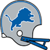
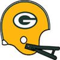
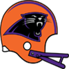
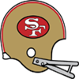

Game of the Week: Cincinnati Bengals at Oakland RaidersOur Expert Predictions:
Jeremy Piper : Cincinnati Bengals
I do not think their defense gets enough credit. They are 4th in points allowed, averaging only 17.4. They are 5th in interceptions with 5. They are 3rd in the league pass average yards per rush. This will really be a statement win.
Mary Moore : Cincinnati Bengals
Of course the Bengals win. Have you been living under a rock? This will be a great game to watch.
Jim Nox : Oakland Raiders
I think having a leader like Ronnie Lott - FS is the kind of thing that will help the Raiders win this game.
Darren Francis : Cincinnati Bengals
This will either be wildly entertaining or a dull grind. I see no middle between the two.
Top receiver trio? The Oilers trio of Roy Green - WR, Mike Quick - WR and Leo Lewis - WR are currently the leading trio of catchers in the league, with 987 receiving yards between the three. The Oilers trio of Roy Green - WR, Mike Quick - WR and Leo Lewis - WR are currently the leading trio of catchers in the league, with 987 receiving yards between the three.
Wright blasts Bill Bryan - C in wake of Bills loss. Louis Wright was furious with his team in an interview after the Bills lost. He called out the effort on both offense and defense. 'These guys, they do not seem hungry. We have to get on the same page. Are we doing this or not?', he complained. Louis Wright - CB was clearly upset after the Bills loss. 'We need to look at ourselves. If you are Bill Bryan (C), can you look at your performance and be happy? This whole team needs to work harder. This whole team needs to decide what we want', the CB said. Louis Wright was furious with his team in an interview after the Bills lost. He called out the effort on both offense and defense. 'These guys, they do not seem hungry. We have to get on the same page. Are we doing this or not?', he complained. Louis Wright - CB was clearly upset after the Bills loss. 'We need to look at ourselves. If you are Bill Bryan (C), can you look at your performance and be happy? This whole team needs to work harder. This whole team needs to decide what we want', the CB said.
Week 5: FS Michael Downs (PRO) wins Defensive Player of the Week FS Michael Downs of the Providence Steam Rollers has earned the Defensive Player of the Week award. Downs finished with 4 Tck, 2 Int, 1 Def TD. FS Michael Downs of the Providence Steam Rollers has earned the Defensive Player of the Week award. Downs finished with 4 Tck, 2 Int, 1 Def TD.
Week 5: RB Marcus Allen (KC) wins Offensive Player of the Week Week 5's Offensive Player of the Week is Running Back Marcus Allen. His 28 att, 162 yds, 2 TD performance stood out in the 41 to 7 victory for the Kansas City Chiefs. Week 5's Offensive Player of the Week is Running Back Marcus Allen. His 28 att, 162 yds, 2 TD performance stood out in the 41 to 7 victory for the Kansas City Chiefs.
The former USC gridiron star is racking up the rushing yards and now has 630 Yards and 5 Touchdowns for the season.
Game Recaps for Week 5Steam Rollers - 27, Bills - 6
Monarchs - 34, Blue Bombers - 7
Raiders - 24, Dolphins - 21
Oilers - 34, Panthers - 28
49ers - 45, Packers - 6
Vikings - 23, Eagles - 20
[Redacted]s - 27, Lions - 21
Chiefs - 41, Falcons - 7
Bengals - 34, Bears - 16Game of the Week: Miami Dolphins at Oakland RaidersOur Expert Predictions:
Jeremy Piper : Miami Dolphins
You just have to look at their offense. They are 4th in the league pass completion percentage. They are 2nd in the league passing touchdowns with 10. They are 1st in the league passing yards per game. They average 319.2! They are 1st in the league in sacks allowed. They are 2nd in the league rushing touchdowns with 6. They are 1st in the league points scored per game. They average 31.2! Believe me.
Mary Moore : Oakland Raiders
I am really on the fence for this one, but I stand my prediction.
Jim Nox : Oakland Raiders
Do not sleep on this defense. They are 1st in sacks with 16. They are 2nd in points allowed, averaging only 12.8. They are 2nd in interceptions with 4.
Darren Francis : Oakland Raiders
Head coach Ross Tirona does a great job getting them prepared every week. This week will be no different. He is doing some clever things with his defense.
Coach Showdown with Simon Sly (Season 1985 Week 5)Simon Sly is here to bring you another edition of Coach Showdown. This week features two interesting specimens.
MARV LEVY, HEAD COACH, BUFFALO BILLS
The Bills currently sit at 0-4.
Marv Levy preaches flexibility on both offense and defense, focusing on what the situation demands. He loves football, and it shows that this is his dreamjob. His eagerness to discuss all aspects of the game is infectious in an organisation.
Levy is much more charismatic than Seifert.
Levy outperforms Seifert in player development.
Levy is not as rigid as Seifert.
Levy works with young players somewhat better than Seifert.
GEORGE SEIFERT, HEAD COACH, LONDON MONARCHS
The Monarchs currently sit at 2-2.
George Seifert preaches flexibility on both offense and defense, focusing on what the situation demands. He is serious and unrelenting, asserts his authority and has little tolerance for distractions.
Seifert is slightly more detail oriented than Levy.
Seifert is a better offisive mind than Levy.
Seifert is so much smarter than Levy.
Seifert is better suited to lead a team than Levy.
Seifert motivates his team a little better than Levy.
Perry media buzzTurns out Detroit local media have jumped on the William Perry hypetrain. The media presense of William Perry - DT is really taking off. His recent interviews have gathered a lot of viewers, and the Lions are enjoying a surge in media coverage and requests. Most people expect Perry to leverage his newfound media following into endorsement deals and possibly a new contract with the Lions.Week 4: DE Chris Doleman (GB) wins Defensive Player of the WeekDE Doleman absolutely dominated in the Packers 26-20 game with the Buffalo Bills. He finished with 5 Tck, 2 Sck, 1 FF, 1 FR.Week 4: RB James Wilder (CLM) wins Offensive Player of the WeekThe honor comes after Wilder's 30 att, 197 yds, 2 TD performance against the San Francisco 49ers. Wilder from Missouri was selected in round 3, 0 years ago.
Wilder now has 519 Rushing Yards and 3 Touchdowns for the season.Johnny Rembert responds to Pete Holohan.'We aint taking no bait! What does he think we are? Trout?' Johnny Rembert responded when asked about the gloating of Pete Holohan after their recent game. 'Our focus is football, not silly childrens games' continued the LB. This should put immediate worries about loss of focus in the 49ers locker room to rest, and is a suitable display of professionality. Well done.Game Recaps for Week 4Dolphins - 30, Falcons - 24
Monarchs - 26, Bears - 7
Panthers - 30, 49ers - 17
Eagles - 40, [Redacted]s - 10
Packers - 26, Bills - 20
Raiders - 10, Blue Bombers - 7
Oilers - 31, Steam Rollers - 17
Vikings - 35, Bengals - 10
Chiefs - 34, Lions - 27Game of the Week: Cincinnati Bengals at Minnesota VikingsOur Expert Predictions:
Jeremy Piper : Minnesota Vikings
Team play. Playing as a unit. You cannot discount the difference it makes. I am thinking of a guy like Randall Cunningham - QB. Playing as a team is what gets them the win.
Mary Moore : Minnesota Vikings
I love what they are doing in Minnesota coaching-wise. Head coach Brock Lesnar is a major reason they will win this game.
Jim Nox : Minnesota Vikings
The leadership on this team is great. Having a guy like Randall Cunningham - QB on the field and in the locker room is exactly what you need to win games like this.
Darren Francis : Cincinnati Bengals
You just have to look at their defense. They are 2nd in points allowed, averaging only 12. They are 4th in pass defense. They only give up 165 per game. They are 4th in run defense. Giving up only 99.3 yards per game. They are 5th in interceptions with 3.
Randy White optimistic about the future.Randy White was not pessimistic in an interview after the Bills lost to the Monarchs. Randy White - DT was upbeat in his assessment after the London lost a close game to the White. 'We learned a lot. We showed a lot. There is reason for optimism. We are very close, and we keep building every week. Do not switch channels, we will be with you shortly.', London said smiling confidently.Week 3: QB Randall Cunningham (MIN) wins Offensive Player of the WeekThe Minnesota Vikings' Randall Cunningham threw 1 touchdowns, completing 20 of 24 passes for 146 yards in the Vikings victory over the Atlanta Falcons.
After being drafted in Round 1 of the 1985 amateur draft, season number 0 for Cunningham, has seen some impressive numbers including 5 touchdown passes this season.Week 3: DE Reggie White (BUF) wins Defensive Player of the WeekDE Reggie White of the Buffalo Bills has earned the Defensive Player of the Week award. White finished with 6 Tck, 5 Sck, 1 FF.Game Recaps for Week 3Bengals - 15, Blue Bombers - 14
Raiders - 24, Chiefs - 23
Vikings - 38, Falcons - 35
49ers - 30, Eagles - 21
Packers - 27, Lions - 24
Dolphins - 37, Steam Rollers - 30
Panthers - 16, Bears - 13
Oilers - 34, [Redacted]s - 3
Monarchs - 22, Bills - 20Game of the Week: Cincinnati Bengals at Winnipeg Blue BombersOur Expert Predictions:
Jeremy Piper : Cincinnati Bengals
When you think of the players that will be on the field, you can make the argument that Dan Marino - QB will shine for the Bengals offense. They rely on him, and he will deliver.
Mary Moore : Cincinnati Bengals
Looking at the teams, it is likely that Steve McMichael - DT is the guy to watch, this man is pivotal to the Bengals defense. The referees will have their work cut out for them. This will be very competitive and intense.
Jim Nox : Winnipeg Blue Bombers
I think their defense will carry them.
Darren Francis : Cincinnati Bengals
The leadership on this team is great. Having a guy like Dan Marino - QB on the field and in the locker room is exactly what you need to win games like this. They get their win and this game will be just another day at the office.
Pete Holohan ridicules the 49ers. No mincing of words from Pete Holohan after the Bears beat the 49ers. 'I think we were clearly the better team. You know, the 49ers talk a big game, but then this game gave context to that. No mincing of words from Pete Holohan after the Bears beat the 49ers. 'I think we were clearly the better team. You know, the 49ers talk a big game, but then this game gave context to that.
Coach Showdown with Simon Sly (Season 1985 Week 3)Simon Sly is back with this week's edition of Coach Showdown. This week features two interesting specimens.
DICK MODZELEWSKI, DEFENSIVE COORDINATOR, GREEN BAY PACKERS
The Packers currently sit at 1-1.
Dick Modzelewski favors an aggressive defense. Professionalism is the key for him. He demands accountability from everyone around him.
Dick Modzelewski runs a 4-3 Hybrid defense. The defense revolves around the linebackers. He prefers mixing up coverage. Modzelewski aims to field versatile linebackers.
They are 17th in sacks with 2.
They are 9th in points allowed, averaging 19.5.
They are 3rd in pass defense with 130 yards given up per game.
They are 13th in run defense. Giving up 126 yards per game.
They are 16th in interceptions with 0.
They are 7th in the league in tackles for loss.
They are 15th in forced fumbles.
HANK BULLOUGH, DEFENSIVE COORDINATOR, BUFFALO BILLS
The Bills currently sit at 0-2.
Hank Bullough favors an aggressive defense. He loves football, and it shows that this is his dreamjob. His eagerness to discuss all aspects of the game is infectious in an organisation.
Hank Bullough runs a 5-2 Hybrid defense. His system requires top notch cornerbacks. He prefers mixing up coverage. Bullough aims to field versatile linebackers.
They are 8th in sacks with 4.
They are 12th in points allowed, averaging 20.5.
They are 4th in pass defense with 159.5 yards given up per game.
They are 3rd in run defense. Giving up 97 yards per game.
They are 14th in interceptions with 0.
They are 12th in the league in tackles for loss.
They are 12th in forced fumbles.
Week 2: RB Walter Payton (WAS) wins Offensive Player of the Week The honor comes after Payton's 32 att, 278 yds, 1 TD performance against the Miami Dolphins. Payton from Jackson State was selected in round 2, 0 years ago. The honor comes after Payton's 32 att, 278 yds, 1 TD performance against the Miami Dolphins. Payton from Jackson State was selected in round 2, 0 years ago.
Payton now has 319 Rushing Yards and 1 Touchdowns for the season.
Week 2: CB Mike Haynes (CHI) wins Defensive Player of the WeekCB Haynes's ball hawking ability was on display in the Bears 38-16 game with the San Francisco 49ers. He finished with 3 Tck.
"Mike has the unique ability to make plays and generate turnovers." -Bears Defensive CoordinatorGame Recaps for Week 2Blue Bombers - 17, Bills - 6
Bengals - 34, Steam Rollers - 16
Bears - 38, 49ers - 16
Chiefs - 21, Monarchs - 14
Eagles - 51, Oilers - 19
Raiders - 42, Falcons - 11
[Redacted]s - 30, Dolphins - 24
Packers - 20, Panthers - 16
Vikings - 35, Lions - 30Game of the Week: Detroit Lions at Minnesota VikingsOur Expert Predictions:
Jeremy Piper : Detroit Lions
Of course the Lions win. Have you been living under a rock? A double digit win.
Mary Moore : Minnesota Vikings
When you think of the players that will be on the field, I think that the Vikings' defense goes through Karl Mecklenburg - LB. This man has the ability to change games. Lots of points scored.
Jim Nox : Minnesota Vikings
I think having a team players like Randall Cunningham - QB is the kind of thing that will help the Vikings win this game.
Darren Francis : Detroit Lions
They will get another win this week.
Week 1: RB Marcus Allen (KC) wins Offensive Player of the WeekThe honor comes after Allen's 31 att, 174 yds, 1 TD performance against the Houston Oilers. Allen from USC was selected in round 1, 0 years ago.
Allen now has 174 Rushing Yards and 1 Touchdowns for the season.Week 1: DE Mark Gastineau (OAK) wins Defensive Player of the Week DE Mark Gastineau of the Oakland Raiders has earned the Defensive Player of the Week award. Gastineau finished with 4 Tck, 2 Sck, 1 FF. DE Mark Gastineau of the Oakland Raiders has earned the Defensive Player of the Week award. Gastineau finished with 4 Tck, 2 Sck, 1 FF.
Game Recaps for Week 1Bengals - 24, Bills - 6
Chiefs - 37, Oilers - 17
49ers - 23, Falcons - 3
Raiders - 27, Eagles - 10
Lions - 16, Bears - 2
Vikings - 13, [Redacted]s - 10
Dolphins - 34, Panthers - 28
Blue Bombers - 23, Packers - 0
Steam Rollers - 17, Monarchs - 6Season PredictionsThe sports journalists association has published the results of this year's division prediction polls among their twenty top sports journalists.
AFC South: Kansas City Chiefs with 10 votes (Runner up: Houston Oilers with 8 votes)
AFC North: Buffalo Bills with 12 votes (Runner up: Cincinnati Bengals with 4 votes)
NFC North: Chicago Bears with 11 votes (Runner up: Green Bay Packers with 5 votes)
NFC South: Atlanta Falcons with 13 votes (Runner up: Clemson Panthers with 7 votes)Game of the Week: Houston Oilers at Kansas City ChiefsOur Expert Predictions:
Jeremy Piper : Houston Oilers
We are doing a sweepstakes at the network, and I look forward to raking in the winnings for this bet.
Mary Moore : Houston Oilers
For this game, you would be a fool not to think Andre Tippett - LB will drive the offense crazy. I expect some incredible plays in this game.
Jim Nox : Kansas City Chiefs
In this game, everything points to that offensive coordinators struggle with containing players like Bob Golic - DT. Expect him to show up in a big way. This will either be wildly entertaining or a dull grind. I see no middle between the two.
Darren Francis : Kansas City Chiefs
But it will be much closer than many think..
CB Rod Kush (N/A) has retired!CB Rod Kush (54 ovr) has retired after failing to get signed in free agency.WR Gordon Banks (N/A) has retired!WR Gordon Banks (58 ovr) has retired after failing to get signed in free agency.RB Major Everett (N/A) has retired!RB Major Everett (66 ovr) has retired after failing to get signed in free agency.Post Free Agency RetirementsThe following players have retired after going unsigned through free agency:Free Agency Round 7: Round Up1 players signed this week.
The biggest name signing this week was Buster Rhymes. The WR out of Oklahoma signed a $2,070,000 contract for 3 year(s) with Houston Oilers.
AFC South was the most active division with a total of 1 signings.
Houston Oilers was the most active signing a total of 1 player(s).
The biggest spender was Houston Oilers who signed 1 player(s) for a total of $2,070,000.QB Dan Marino (CIN) goes #1 overall!NEW YORK -- The Cincinnati Bengals drafted Dan Marino #1 overall in the 1985 draft. The 6' 4" QB fits the team's needs perfectly. Said Bengals general manager: "It's up to us to develop him and get good players around him."
"The great thing about the game of football is, it's a team game," Marino said on a conference call. "I'm just going to be one piece of the puzzle." |
 Bengals
Bengals Bills
Bills Blue Bombers
Blue Bombers Chiefs
Chiefs Dolphins
Dolphins Monarchs
Monarchs Oilers
Oilers Raiders
Raiders Steam Rollers
Steam Rollers [Redacted]s
[Redacted]s 49ers
49ers Bears
Bears Eagles
Eagles Falcons
Falcons Lions
Lions Packers
Packers Panthers
Panthers Vikings
Vikings